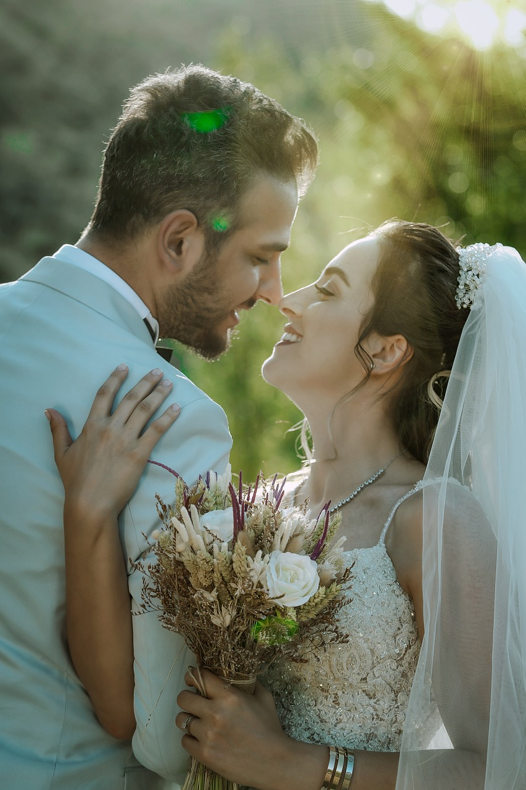
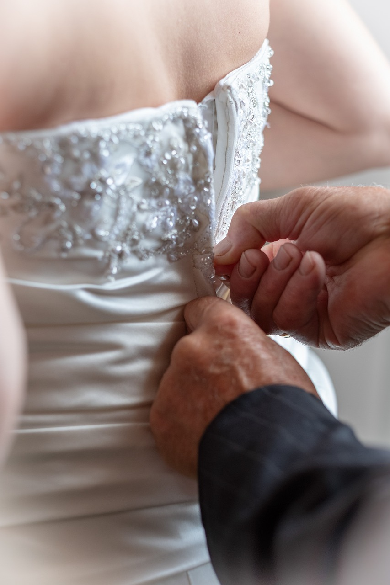

Portraits
I offer portrait sessions all over the globe. Perhaps you'd like me to visually document a surprise proposal, celebrate your engagement, or picture yourselves enjoying a break overseas. I love to document real love and real emotions. Sessions can be on the beach, in the mountains, in your home... So many reasons to have a portrait session - a pre-wedding photo shoot, a honeymoon, an anniversary, or just for fun! If you’ve further questions about any of my portrait photography services, don’t hesitate to get in touch.



